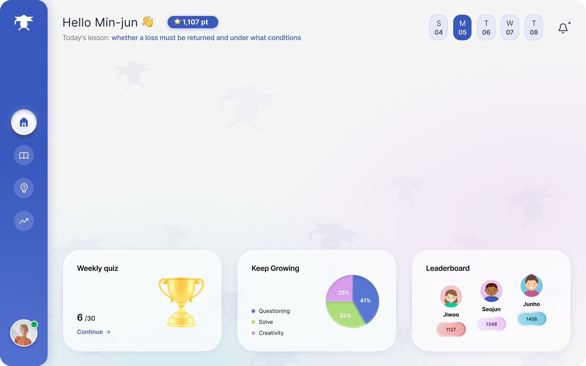
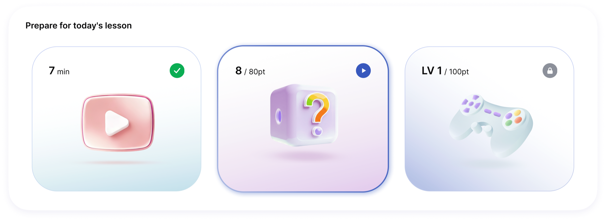
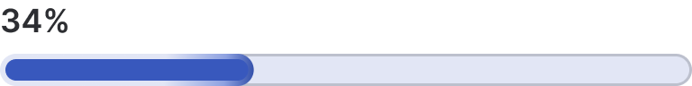
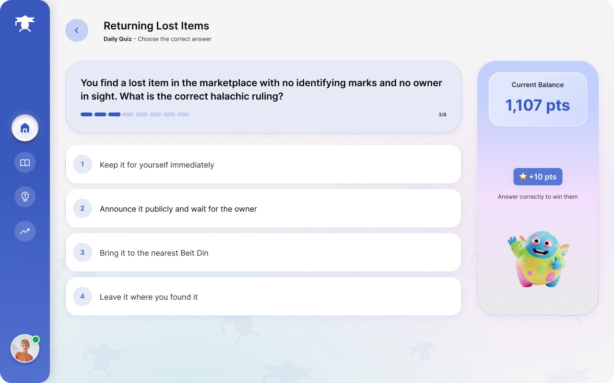
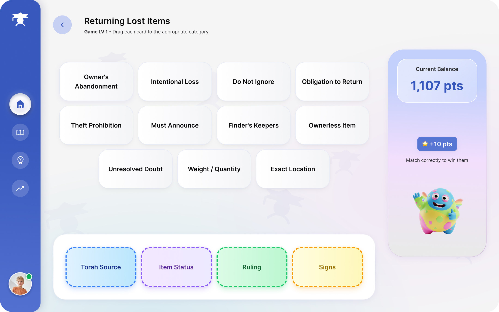
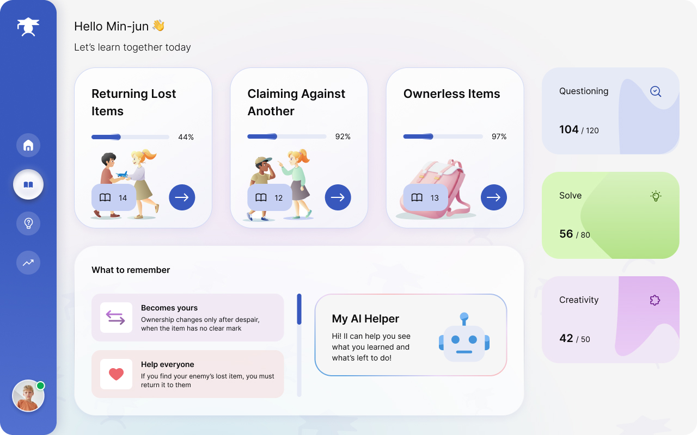

Talmind: bringing authentic Talmud study to Korean classrooms
The Koreans believe that studying the Talmud is the main reason for the success and wisdom of the Jews, pointing to the fact that they account for 25% of Nobel Prize winners, despite making up only 0.2% of the world's population.
Source: The Times of Israel
Overview
Talmind is a tablet app designed to bring authentic Talmud study to elementary, middle, and high school classrooms in Korea to help them acquire and adopt a Jewish mindset.
This is what I discovered after a friend sparked my curiosity
- 1
The Korean population, approximately 50 million people, owns almost every household a "book called the Talmud." The Ministry of Education has even recommended including Talmudic stories in children's studies to develop thinking and intellectual skills.Source
- 2
In most families, the book called the "Korean Gemara" is a 40-page collection of Talmudic stories, based on the work of Rabbi Marvin Tokayer from the 1970s, similar to moral tales of the sages or Stories of the Sages.Source
- 3
There are private educational institutions known as "Chavruta Academies." The academies were founded by Dr. Park Ki-Ryong from KHU University, in collaboration with associations for Jewish leadership and innovative education.Source
What is Talmud?
Rules & quotations
In-depth discussion
Problem
Gaps in knowledge and a limited cultural context lead to an approach that ignores core principles, making it hard to learn the material effectively. Additionally, social norms make students hesitant to ask questions in front of their peers, so they miss out on deeper learning.
Solution
The experience connects to authentic Talmudic topics using a simple two-step path: first, getting a clear grip on the dry facts, and then diving into the more engaging and deeper parts of the material.
To ensure fit and profitability, I have currently focused the product on the student side and it will serve as a classroom pilot allowing teachers to track real-world progress and validate the value of the product before scaling up.
What does a successful pilot look like?
Success means 80%+ of the class achieves the engagement metrics set in one lesson: 7 good questions, 3 accurate answers, and 1 creative solution.
To ensure this, Talmind AI agent, trained in Talmudic subjects, handles rapid assessment behind the scenes, instantly determining which ones meet standards of quality, accuracy, and creativity.
The Challenges
How do I teach the dry, boring parts?!
And how can the same game structure
work for both grades 4-6 and grades 7-12?
The proposed solution:
I brought the fun part to life through a game experience that allows them to be active partners in the learning process. And for the game, I trained an artificial intelligence agent to analyze each Talmudic section and automatically adapt its content to each learning level, so that the game structure itself will never have to change.

Sketch
Before a single pixel: The flow of the three steps of lesson preparation, the daily quiz, and the drag-and-match game, which were initially developed manually.

Home - Final design
I used status icons to help students quickly understand which steps are completed and
which step they're currently on.
I also added a progress bar within each step and locked the next one to
keep students focused and create motivation and curiosity.



Quiz
Includes 8 questions about the material taught in the video.
To increase
engagement, I added a points system and immersive character animation to create a more rewarding and
enjoyable experience.

Game
To reduce development costs for a game targeting 4th to 12th graders, as a first step
I chose a simple drag-and-drop mechanics. This allowed me to easily scale the difficulty based on the
complexity of the concepts.
and to be honest, I was also inspired by the Duolingo app on how to teach in
a fun way.

Lessons
The lessons are organized by topic, while an artificial intelligence assistant clearly highlights what remains to be completed, so the student can stay focused.
Based on two key components of Talmudic intellect, I combined these elements to incentivize three core skills that support students throughout their lessons and quizzes.

Home - Exertion
I initially considered allowing direct lesson access from the homepage, but decided to lock it until preparation is complete to ensure all students start the lesson equally prepared


Impact & Takeaways
I am excited to share that word-of-mouth has brought our product to influential figures in South Korea, sparking great curiosity among educators. We are currently exploring a pilot program tailored for middle school classes. This initial phase will feature the student interface alongside a data collection and analytics dashboard for teachers.
Through this experience, I learned that any challenge can be transformed into a successful reality by deeply understanding user pain points and breaking them down into actionable stages. The most rewarding part was finding intuitive ways to bridge cultural gaps while leveraging advanced AI capabilities to elevate the product.